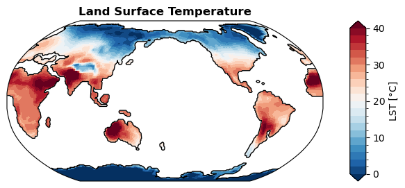
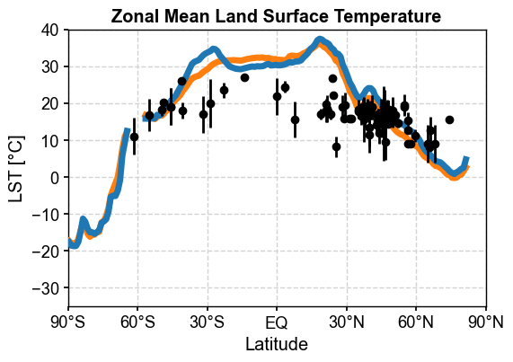
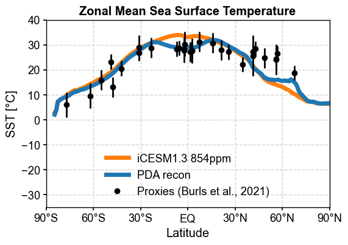

Diagnostics: PDA reconstruction#
[1]:
%load_ext autoreload
%autoreload 2
import os
os.chdir('/glade/u/home/fengzhu/Github/x4c/docsrc/notebooks')
import numpy as np
import x4c
print(x4c.__version__)
2024.4.16
[2]:
dirpath = '/glade/campaign/univ/ubrn0018/fengzhu/CESM_output/timeseries/b.e13.B1850C5.ne16_g16.icesm131_d18O_fixer.Miocene.3xCO2.005'
case = x4c.Timeseries(dirpath)
>>> case.root_dir: /glade/campaign/univ/ubrn0018/fengzhu/CESM_output/timeseries/b.e13.B1850C5.ne16_g16.icesm131_d18O_fixer.Miocene.3xCO2.005
>>> case.path_pattern: comp/proc/tseries/month_1/casename.mdl.h_str.vn.timespan.nc
>>> case.grid_dict: {'atm': 'ne16', 'lnd': 'ne16', 'rof': 'ne16', 'ocn': 'g16', 'ice': 'g16'}
>>> case.vars_info created
[3]:
import pandas as pd
filename = '/glade/work/fengzhu/Projects/MioMIP1/Data_02_28_20_clean_MidMioceneSlab_MAT.csv'
MIDMIO_MAT = pd.read_csv(filename, header=0, sep=',')
MIDMIO_MAT2= MIDMIO_MAT.values[0:-1,:]
MidMioLat=np.asarray(MIDMIO_MAT2[:,0],dtype=np.float64)
MidMioLon=np.asarray(MIDMIO_MAT2[:,1],dtype=np.float64)
MidMioMAT=np.asarray(MIDMIO_MAT2[:,2],dtype=np.float64)
MidMioMATUncert=np.asarray(MIDMIO_MAT2[:,3],dtype=np.float64)
[4]:
import xarray as xr
import x4c
SNR = 3
recon_tas = xr.load_dataset(f'/glade/work/fengzhu/Projects/MioDA/notebooks/recons/recon_tas_loc10000_SNR{SNR}.nc')['tas']
recon_tas.attrs['units'] = '°C'
recon_tas.attrs['long_name'] = 'Air Surface Temperature'
recon_sst = xr.load_dataset(f'/glade/work/fengzhu/Projects/MioDA/notebooks/recons/recon_sst_loc10000_SNR{SNR}.nc')['sst']
recon_sst.attrs['units'] = '°C'
recon_sst.attrs['long_name'] = 'Sea Surface Temperature'
recon_sst.name = 'SST'
recon_lst = recon_tas.where(np.isnan(recon_sst))
recon_lst.attrs['units'] = '°C'
recon_lst.attrs['long_name'] = 'Land Surface Temperature'
recon_lst.name = 'LST'
[5]:
case.diags['map:LST:recon'] = recon_lst
case.diags['zm:LST:recon'] = recon_lst.x.zm
case.diags['map:SST:recon'] = recon_sst
case.diags['zm:SST:recon'] = recon_sst.x.zm
[6]:
fig, ax = case.plot('map:LST:recon')
>>> case.ds["SSH"] created

[7]:
x4c.set_style('journal_spines', font_scale=1.2)
case.calc('zm:LST:ann', load_idx=-1)
fig, ax = case.plot('zm:LST:ann', figsize=(6, 4), label='iCESM1.3 854ppm', color='tab:orange', zorder=101, lw=5)
ax = case.plot('zm:LST:recon', label='PDA recon', color='tab:blue', zorder=101, lw=5, ax=ax)
ax.errorbar(MidMioLat, MidMioMAT, yerr=MidMioMATUncert, ls='none', color='k', zorder=102)
ax.plot(MidMioLat, MidMioMAT, marker='o', ls='none', color='k', label='Proxies', zorder=102)
ax.set_title('Zonal Mean Land Surface Temperature', weight='bold')
# ax.legend(frameon=False, loc='lower center')
x4c.showfig(fig)
x4c.savefig(fig, './figs/zm_LST_ann_compare_model-data-recon.pdf')
Regridding from [1, 13826] to [180, 360]
>>> case.ds["TS"] created
Regridding from [1, 13826] to [180, 360]
>>> case.ds["LANDFRAC"] created
>>> case.diags["zm:LST:ann"] created

Figure saved at: "figs/zm_LST_ann_compare_model-data-recon.pdf"
[8]:
filename='/glade/work/fengzhu/Projects/MioMIP1/MidMiocene_SST_v2.csv'
MIDMIO_SST = pd.read_csv(filename, header=0, sep=',')
MIDMIO_SST2=MIDMIO_SST.values[:,:]
MidMioSSTLat=np.asarray(MIDMIO_SST2[:,3],dtype=np.float64)
MidMioSST=np.asarray(MIDMIO_SST2[:,1],dtype=np.float64)
MidMioSST_ucert=np.asarray(MIDMIO_SST2[:,2],dtype=np.float64)
[9]:
MIDMIO_SST
[9]:
| Site | Mid Miocene SST | Mid Miocene Uncertainty | Mid Miocene Lat | Mid Miocene Lon | Mid Miocene Adjusted | Unnamed: 6 | Unnamed: 7 | Unnamed: 8 | Unnamed: 9 | Unnamed: 10 | Unnamed: 11 | Unnamed: 12 | |
|---|---|---|---|---|---|---|---|---|---|---|---|---|---|
| 0 | DSDP594 | 23.20 | 3.00 | -48.93 | 178.21 | 178.21 | NaN | NaN | NaN | NaN | NaN | NaN | NaN |
| 1 | 608Uk37 | 27.22 | 3.00 | 41.51 | -23.46 | 336.54 | NaN | NaN | NaN | NaN | NaN | NaN | NaN |
| 2 | 608Tex86 | 25.63 | 8.14 | 41.55 | -23.45 | 336.55 | NaN | NaN | NaN | NaN | NaN | NaN | NaN |
| 3 | 722 | 30.74 | 4.01 | 15.94 | 61.43 | 61.43 | NaN | NaN | NaN | NaN | NaN | NaN | NaN |
| 4 | 730 | 31.25 | 4.05 | 7.33 | 57.23 | 57.23 | NaN | NaN | NaN | NaN | NaN | NaN | NaN |
| 5 | 761 | 28.80 | 4.00 | -23.06 | 112.79 | 112.79 | NaN | NaN | NaN | NaN | NaN | NaN | NaN |
| 6 | 806Tex86 | 30.23 | 5.00 | -2.09 | 168.89 | 168.89 | NaN | NaN | NaN | NaN | NaN | NaN | NaN |
| 7 | 846 | 28.75 | 3.00 | -5.62 | -80.77 | 279.23 | NaN | NaN | NaN | NaN | NaN | NaN | NaN |
| 8 | 850Tex86 | 27.84 | 5.00 | -2.51 | -101.12 | 258.88 | NaN | NaN | NaN | NaN | NaN | NaN | NaN |
| 9 | 850Uk37 | 28.33 | 3.00 | -2.51 | -101.12 | 258.88 | NaN | NaN | NaN | NaN | NaN | NaN | NaN |
| 10 | 907 | 18.79 | 3.00 | 67.86 | -15.47 | 344.53 | NaN | NaN | NaN | NaN | NaN | NaN | NaN |
| 11 | 925Uk37 | 27.86 | 3.00 | 2.58 | -38.55 | 321.45 | NaN | NaN | NaN | NaN | NaN | NaN | NaN |
| 12 | 925Tex86 | 27.63 | 5.00 | 2.58 | -38.55 | 321.45 | NaN | NaN | NaN | NaN | NaN | NaN | NaN |
| 13 | 926 | 27.23 | 4.00 | 1.65 | -37.66 | 322.34 | NaN | NaN | NaN | NaN | NaN | NaN | NaN |
| 14 | 982Uk37L | 26.62 | 3.00 | 56.72 | -17.33 | 342.67 | NaN | NaN | NaN | NaN | NaN | NaN | NaN |
| 15 | 982Tex86 | 24.09 | 6.11 | 56.18 | -17.20 | 342.80 | NaN | NaN | NaN | NaN | NaN | NaN | NaN |
| 16 | 982Uk37S | 24.36 | 3.00 | 56.23 | -17.16 | 342.84 | NaN | NaN | NaN | NaN | NaN | NaN | NaN |
| 17 | 1010 | 27.17 | 3.00 | 26.09 | -108.69 | 251.31 | NaN | NaN | NaN | NaN | NaN | NaN | NaN |
| 18 | 1021 | 22.13 | 3.00 | 34.88 | -118.60 | 241.40 | NaN | NaN | NaN | NaN | NaN | NaN | NaN |
| 19 | 1085Uk37 | 26.68 | 3.00 | -31.14 | 14.32 | 14.32 | NaN | NaN | NaN | NaN | NaN | NaN | NaN |
| 20 | 1085Tex86 | 28.90 | 5.00 | -31.15 | 14.32 | 14.32 | NaN | NaN | NaN | NaN | NaN | NaN | NaN |
| 21 | 1088 | 20.56 | 3.00 | -42.07 | 14.45 | 14.45 | NaN | NaN | NaN | NaN | NaN | NaN | NaN |
| 22 | 1092 | 13.09 | 4.00 | -47.70 | 7.57 | 7.57 | NaN | NaN | NaN | NaN | NaN | NaN | NaN |
| 23 | 1146 | 27.92 | 4.00 | 21.18 | 117.57 | 117.57 | NaN | NaN | NaN | NaN | NaN | NaN | NaN |
| 24 | U1338 | 28.29 | 3.00 | -7.02 | -107.26 | 252.74 | NaN | NaN | NaN | NaN | NaN | NaN | NaN |
| 25 | U1356 | 9.54 | 5.00 | -61.84 | 133.96 | 133.96 | NaN | NaN | NaN | NaN | NaN | NaN | NaN |
| 26 | 1171 | 15.89 | 4.00 | -55.02 | 149.60 | 149.60 | NaN | NaN | NaN | NaN | NaN | NaN | NaN |
| 27 | AND2A | 6.07 | 5.00 | -76.85 | 157.09 | 157.09 | NaN | NaN | NaN | NaN | NaN | NaN | NaN |
| 28 | LOM1 | 24.75 | 4.00 | 48.94 | 14.90 | 14.90 | NaN | NaN | NaN | NaN | NaN | NaN | NaN |
| 29 | Med | 28.37 | 3.00 | 42.91 | 13.55 | 13.55 | NaN | NaN | NaN | NaN | NaN | NaN | NaN |
[10]:
x4c.set_style('journal_spines', font_scale=1.2)
case.calc('zm:SST:ann', load_idx=-1)
fig, ax = case.plot('zm:SST:ann', figsize=(6, 4), label='iCESM1.3 854ppm', color='tab:orange', zorder=101, lw=5)
ax = case.plot('zm:SST:recon', label='PDA recon', color='tab:blue', zorder=101, lw=5, ax=ax)
ax.errorbar(MidMioSSTLat, MidMioSST, yerr=MidMioSST_ucert, ls='none', color='k', zorder=102)
ax.plot(MidMioSSTLat, MidMioSST, marker='o', ls='none', color='k', label='Proxies (Burls et al., 2021)', zorder=102)
ax.set_title('Zonal Mean Sea Surface Temperature', weight='bold')
ax.legend(frameon=False, loc='lower center')
x4c.showfig(fig)
x4c.savefig(fig, './figs/zm_SST_ann_compare_model-data-recon.pdf')
>>> case.ds["TEMP"] created
>>> case.diags["zm:SST:ann"] created

Figure saved at: "figs/zm_SST_ann_compare_model-data-recon.pdf"
[ ]: